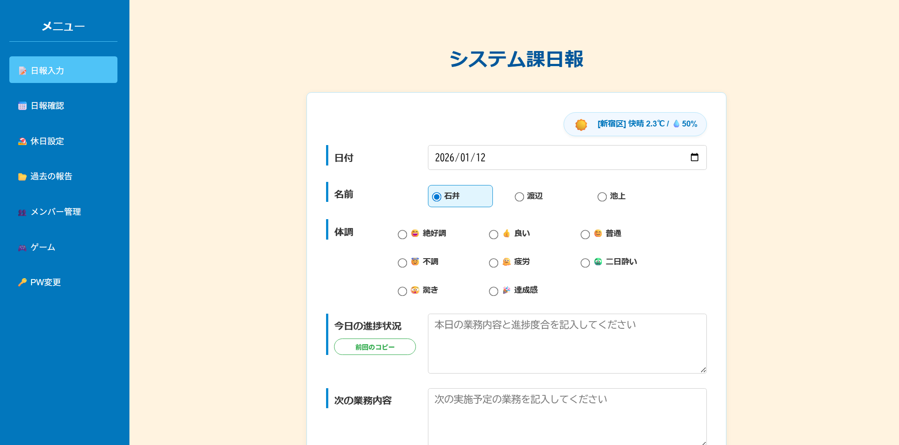
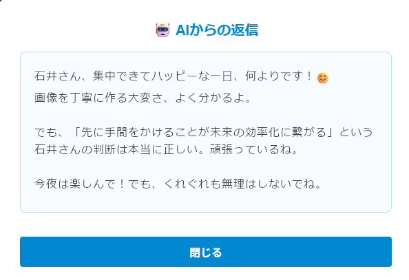
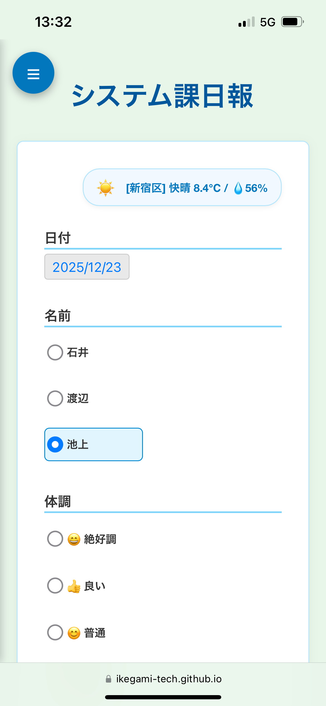
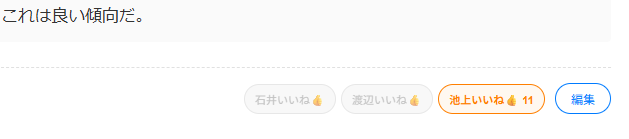
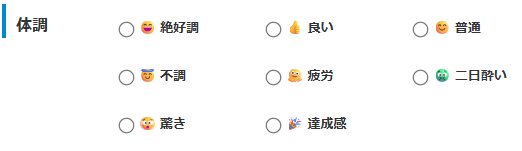
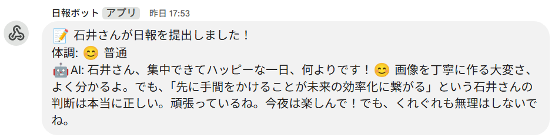
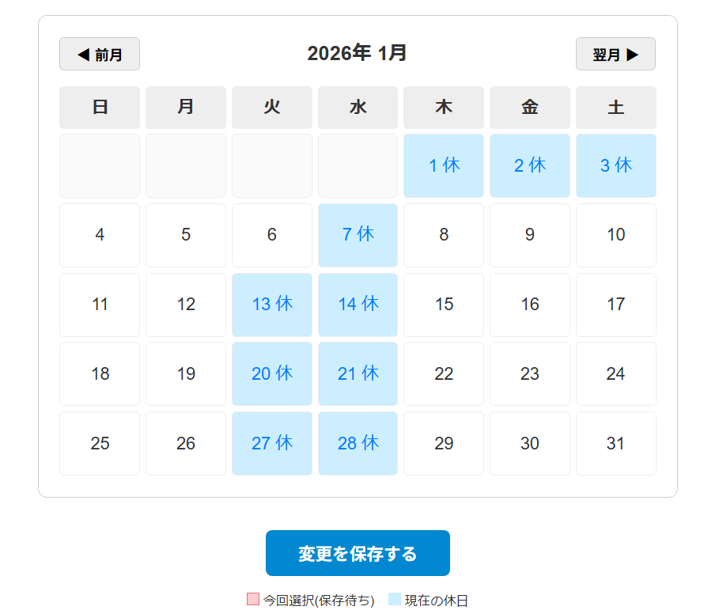

シスろぐ

導入効果
🚀 提出率：AI返信などのエンタメ要素により、義務感なくほぼ100%を達成
📚 透明性：リアルタイムな進捗共有により、チーム内の業務状況を可視化
💬 組織力：「いいね」やリアクションを通じた円滑なコミュニケーションを創出
開発の背景・概要
従来の日報は個人の記録に留まりがちで、記入忘れや形骸化が大きな課題でした。
そこで「誰でも毎日投稿したくなる日報」をコンセプトに開発。
単なる業務報告の場ではなく、AIからのユニークなフィードバックを楽しんだり、メンバー同士でリアクションを送り合ったりすることで、チームの連携を自然に強化するプラットフォームを目指しました。
主な機能
選べるAI返信キャラクター
その日の気分に合わせて「上司」「恋人」「幼馴染」などから返信相手を選択可能。 AIからのユニークなリアクションが、毎日の投稿モチベーションを持続させます。

モバイル対応・マルチデバイス設計
スマートフォンからも手軽に記録可能。 移動中や帰宅時など、PCを開けない状況でも出先からスムーズに入力・確認が行えます。

「いいね」＆リアクション機能
投稿に対してクイックなリアクションが可能。 既読確認としての利用はもちろん、メンバーのモチベーション向上や称賛の文化を醸成します。

直感的な体調・コンディション管理
今日のコンディションをアイコンで選択。 テキストだけでは伝わりにくいメンバーの状態を視覚的に把握し、マネジメントに活用できます。

未提出通知・リマインド機能
決まった時間に提出がない場合、自動でリマインド通知を送信。 うっかり忘れを防止し、日報の習慣化をシステムが強力にバックアップします。

休日カレンダー・管理設定
管理画面から休日の追加や削除を簡単に修正可能。 各ユーザーの勤務実態に合わせた柔軟な運用設定が行えます。
